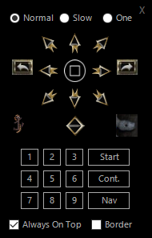
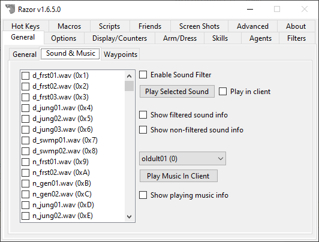

General
General Settings
The General tab has setting largely related to the client itself and Razor in general.

General
Profiles

Each character has a profile that contains your settings, such as the options in Razor and your hotkeys. Profiles are stored in the same location as Razor.exe under .\Profiles\. You can create a new profile, which will be based on the default profile settings
- New
- Create a new profile based off of the default Razor profile.
- Save
- Save all the current Razor settings without having to log out.
- Clone
- Clone the existing selected profile and create a new one.
- Delete
- Delete the selected profile.
Creating a new profile
Clicking New will generate a new profile based on the default profile that comes with Razor. If you rather create a new profile using an existing profile, select that profile first and click the Clone button.
Saving your profiles
Razor will save your profile two ways.
- When you open your paperdoll in UO, click Logout and click OK.
- This triggers the client to tell Razor that you logged off, which performs the profile save.
- Click the Save button manually to ensure your changes are saved.
Backing up your profiles, macros and scripts
To create a backup, click the Create Backup button. This will copy all your profiles, macros and scripts to the Backups folder in the root of your Razor folder.
In-Game Commands
Razor supports the following in-game commands (not case-sensitive).
Command Prefix
The command prefix with the OSI client is -.
If you are using ClassicUO, you must prefix each command with >.
For example, instead of -where you would type >where. This is due to ClassicUO commands starting with - and several UO commands for yell, whisper, guild use other symbols so Razor had find something unique.
help- Displays all the in-game commands you see here.adduseonce- Creates a target that adds the item to the UseOnce list.time- Displays the current client system time.where- Displays your X/Y/Z coordinates according to Razor.
Tip
Some shards support [where to get your location from the server.
ping- Pings the server 5 times and returns the results.echo- Send a message to yourself. Useful for leaving a note to yourself when macroing, for example.getserial- Get information on the RPV you are viewing to verify authenticity.rpvinfo- Get information on the RPV you are viewing to verify authenticity.macro [name]- This will run a macro in-game. If you have a macro calledCreateRobesyou would typemacro CreateRobes.hue- Display information about an item, include the hue.item- Same ashue.resync- This will resync your client, the same way the resync hotkey does.mobile- Display some general information about a mobile (used for debugging)weather [weather_type] [num_of_effects]- Set the weather in the game. Weather will end automatically after 6 minutes, on newer clients it will end in 10 minutes.[weather_type]:0- It starts to rain1- A fierce storm approaches2- It begins to snow3- A storm is brewing
[num_of_effects]- Max number on the screen (client restriction) is 70.
season [season_type]- Sets the season. This is client side only.[season_type]:0- Spring1- Summer2- Fall3- Winter4- Desolation (Feluccia)
set [variable]- Sets a macro variablewaypoint [x] [y]ortrack off- Sets a waypoint at a specificX/Ylocation. If you passoffit will remove it from the client.
Maps / Boat
UOPS

Razor's Ultima Online Position System (UOPS) gives you a basic map.
Boat Control

Boat Control was inspired by UO Rudder and designed to make navigating the seas of Britannia much easier. This tool is built into Razor.
Tip
Right-clicking on 1 of the 4 directions will set relative location.
Other
- Show Welcome Screen (Global Setting)
- When checked, opening Razor will give you the Welcome Screen. This is where you can enter new servers, change your client location, etc.
- Use Smart Always on Top
- Razor will stay on top of the UO window when it becomes active and hide when it becomes inactive.
- Show in Taskbar or System Tray
- You can have Razor in the Taskbar or the System Tray. It's all up to you.
- Default Client Priority
- This changes the priority given to the process. Honestly, leave it at Normal. This feature should be removed. It's old.
- Language
- The
.\Language\folder contains all the translations. Some are missing, feel free to translate based on the.enufile located in the package.
- The
- Opacity
- Adjust the transparency of Razor. Useful on a single monitor.
Sound & Music

- Enable Sound Filter
- When checked, sounds that are checked will be blocked from playing in the client.
- Play Selected Sound
- Listen to the selected sound. If you check
Play in clientthe sound will play in the client if logged in.
- Listen to the selected sound. If you check
- Show filtered sound info
- If a sound is blocked, show the name in system messages.
- Show non-filtered sound info
- If a sound plays, show the name in system messages.
- Play Music In Client
- Plays the specific song in the client if logged in.
Waypoints

This feature lets you set waypoints, that will display within the client.
- Show waypoint messages overhead
- Direct waypoint messages from system message to overhead.
- Show tile distance every X
- If checked, it will show the current distance every X seconds.
- Hide waypoint within
- When you're within X tiles, hide the waypoint.
- Create waypoint on death
- Upon death, create a waypoint.